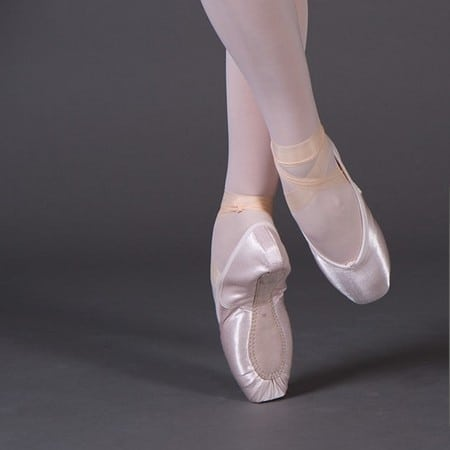

Come prepararsi all'audizione
Sarà necessario aver fatto un buon riscaldamento e tanto stretching ad ogni muscolo per permettere al meglio l'elasticità di ogni ragazza durante l'audizione.
L'audizione sarà divisa in due parti: la prima in gruppo e la seconda singolarmente
Durante la prova in gruppo ci sarà un/una professionista che mostrerà gli esercizi alla sbarra e al centro e invece per quanto riguarda la parte singolarmente bisognerà mostrare alla giuria una variazione classica a scelta
Cosa sarà necessarioportare con se il giorno dell'audizione
Abbigliamento
- Body smanicato o con la manica - i body manica lunga non sono accettati
- Calze
- Mezze punte
- Punte - per chi le usa 
- I capelli dovranno essere legati ordinatamente in uno chignon senza capelli che fuoriescono
- Gonnellino - facoltativo
Iscriviti
Aggiungere i propri dati è importantissimo per noi perchè ci darà la possibilità di capire il livello di ogni aspirante ballerino/a e in base all'età sapremmo come suddividere al meglio i vari corsi e percorsi
Compila il box seguente e non appen riceveremo il tuo contatto provvederemo a inviarti il modulo di iscrizione.